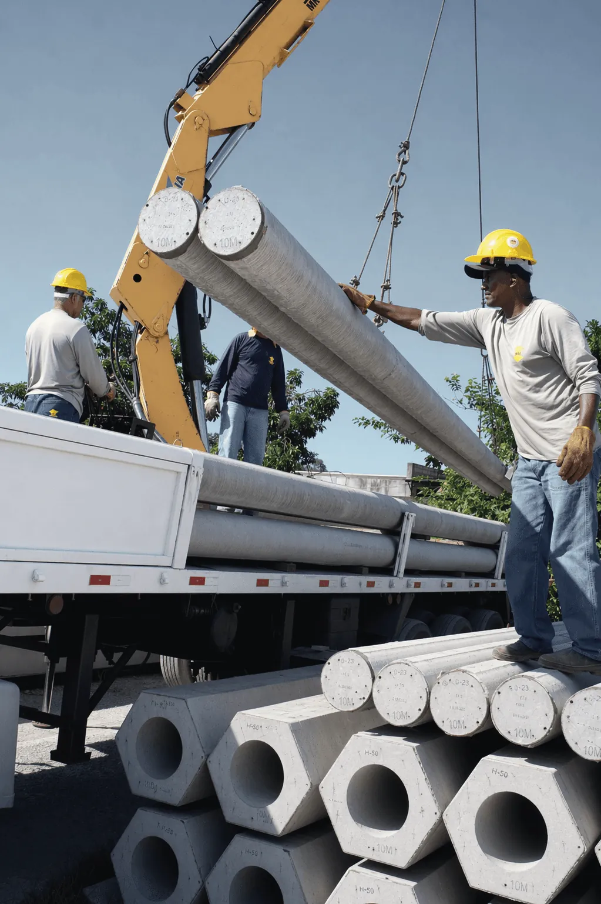

Rigor técnico em cada lote.
Durante a concretagem, cada lote deixa amostras para trás. Os corpos de prova vão à prensa em idades definidas, e é o resultado deles que libera a peça para o próximo passo.

Matéria-prima com critério de aceitação.
A cadeia de suprimentos da IPR é vinculada a fornecedores que apresentam certificação de conformidade.
- Insumo
Aço
Verificação das propriedades mecânicas e dos certificados de qualidade conforme as normas técnicas.
- Insumo
Areia e pedra
Controle de granulometria, índice de forma e pureza dos agregados.
- Insumo
Cimento
Validação de procedência e conformidade com os requisitos de resistência e tempo de pega.
Cronograma de rompimento.
Durante a concretagem de cada estaca são extraídas amostras para moldagem de corpos de prova cilíndricos, ensaiados em idades críticas.
Ensaio de 24 horas
Acompanha o ganho inicial de resistência do concreto protendido, a informação que libera a desmoldagem e o manuseio das peças.
Ensaio de 3 dias
Confirma a evolução da resistência nas primeiras idades e a consistência do traço produzido pela central.
Ensaio de 7 dias
Verificação intermediária que permite antecipar desvios e garantir que o lote evolui conforme o projetado.
Ensaio de 28 dias
Validação estrutural: a conformidade do lote depende de alcançar o fck projetado, assegurando a integridade da fundação.
Controle exato do traço.
Central própria, com propriedades estáveis de um lote para o outro.
- PadronizaçãoDosagem gravimétrica precisa dos componentes.
- DurabilidadeRelação água/cimento mantida para reduzir a porosidade e proteger o aço.
- SincroniaProdução e lançamento no mesmo ritmo, sem perda de trabalhabilidade no trajeto.

100% das unidades inspecionadas.
Depois da cura inicial e da desmoldagem, todas as peças passam pela inspeção visual individual. O protocolo procura:
- Descontinuidades superficiais ou segregações do concreto
- Precisão dimensional da seção e do comprimento
- Alinhamento e retilineidade da peça
- Vínculo do lote aos resultados laboratoriais
Rastreabilidade: cada processo é documentado e liga cada estaca aos resultados de laboratório do seu lote de concreto.

